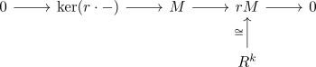

finitely generated, torsion free module over a PID as free module
Proposition
Let $R$ be a principal ideal domain and $M$ a finitely generated torsion-free module. Then $M \cong R^k$ is free for some $k \in \mathbb{N}$
Proof
By assumption there exist $m_1,...,m_n$ such that $M = \langle m_1,...,m_n\rangle$.
Furthermore $\langle m_1\rangle \cong R$ is free
Choose the maximal $s \geq 1$ such that after renumbering
Then for $s < j$ and $m_j$ we get
as otherwise $ \langle m_1,...,m_s,m_j\rangle \cong F \oplus \langle m_j\rangle \cong R^{s+1}$, contradiction to maximality of $s$.
Therefore there exists an $r_j \neq 0$ with $r_j \cdot m_j \in F$.
Let
Then $r \cdot m_j \in F$ for arbitrary $j > s$. Therefore
is a submodule of a free module (cf. submodule of a finitely generated free module over a PID as free module)
Here we get
for the scalar multiplication as endomorphism and the short exact sequence

where by splitting lemma for modules
Here $\mathrm{ker}(r \cdot -) \cong 0$ is trivial, as $r \cdot -$ is a monomorphism since $M$ is torsion free